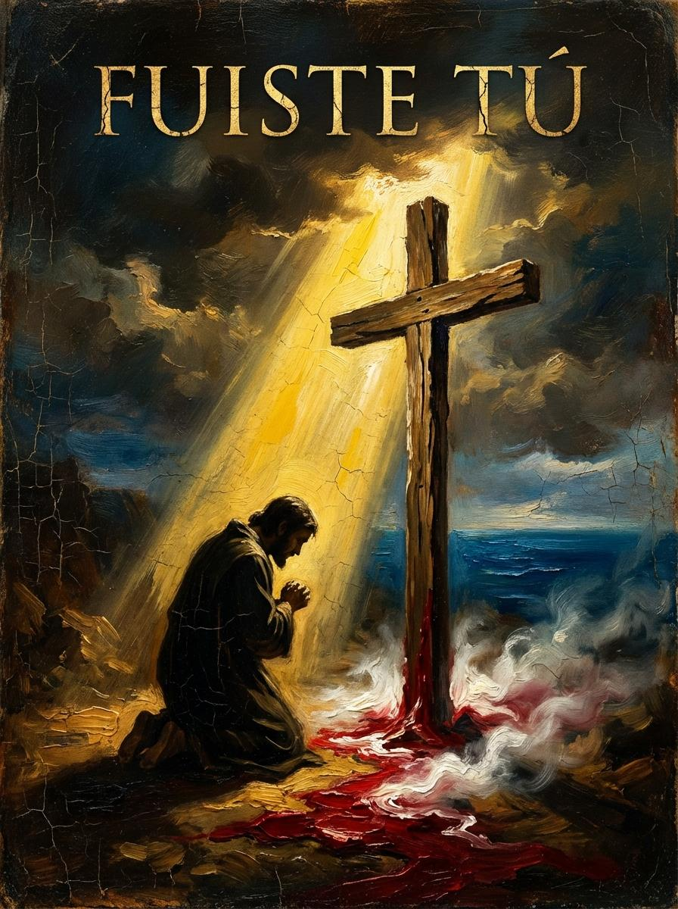

El Cirio
Una historia de devoción y luz eterna
LEER HISTORIA

Fuiste Tú
Una historia de redención y misericordia divina
LEER HISTORIA

Ecos del San José
Una historia de naufragio, amor y eternidad
LEER HISTORIA
Próximas Historias
?
Historia 4
Próximamente...
?
Historia 5
Próximamente...
Tu Historia
¿Quieres que cree tu historia gráfica? Contacta para comisiones personalizadas.